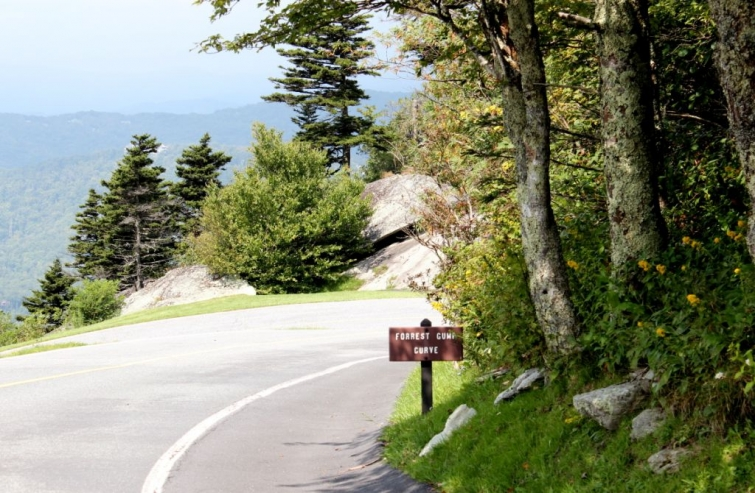
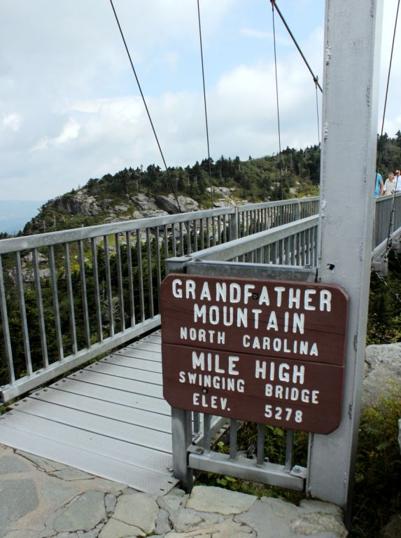

.png)
.PNG)
.PNG)
.PNG)
.PNG)
.PNG)
.JPG)
.JPG)
.PNG)
.PNG)


.jpg) Happy Friday! I have a few more pictures from North Carolina to show you today.This was the view we had at Grandfather Mountain a couple of weeks ago. Breathtaking, right? VERY breathtaking to me since I have such a terrible fear of heights! We spent one morning there exploring the area after enjoying a hearty breakfast at the Inn at Little Pond Farm. Did you know that part of the movie Forrest Gump was filmed at Grandfather Mountain? It was a scene where Forrest was running across America.
Happy Friday! I have a few more pictures from North Carolina to show you today.This was the view we had at Grandfather Mountain a couple of weeks ago. Breathtaking, right? VERY breathtaking to me since I have such a terrible fear of heights! We spent one morning there exploring the area after enjoying a hearty breakfast at the Inn at Little Pond Farm. Did you know that part of the movie Forrest Gump was filmed at Grandfather Mountain? It was a scene where Forrest was running across America.
Tom Hanks was supposed to send a double (his brother) to film this portion of the movie, but he showed up for the filming himself. Apparently he looked so “ordinary” very few people even knew it was him! 🙂
Besides beautiful views and the Forrest Gump curve, Grandfather Mountain has one of these…

A mile high bridge…yikes. Did I really want to walk on that??

I was okay as long as I held on to the rail, but when we reached the other side, I could not step out on the rocks because there was no rail to hold onto. Isn’t it crazy how fear can mess with your head??!
We also spent some time in the charming town of Blowing Rock.
And of course, I could not help but feel like I was in the fictitious town of Mitford. One of the antique shops there has always made me think of Andrew Gregory’s shop in the Jan Karon books. It is filled with English antiques.
We went by the beautiful St. Mary’s of the Hills Episcopal church that was the inspiration for Father Tim’s chapel in the books.
Blowing Rock has a park right in the middle of their downtown area.
And gardens! You would love all the lush gardens throughout that little town.
Even their statues love gardening. 🙂
I thought the flower beds and statue outside the public library were perfect!
After we walked around the town, we decided to just drive through some of the neighborhoods there, looking at the homes and gardens. I was more than ready to move to Blowing Rock after seeing some of these!
Can you tell I liked the first one? The rest were very pretty, too.
I thought the stained wood garage doors were beautiful on this home.
This one took up an entire block, and you could drive all the way around it.
Although the ones I have shown you are quite large, I think we could be more than happy in this little cottage!
After touring Blowing Rock, we decided to go for a drive at sunset on the Blue Ridge Parkway.
The fog kept moving in and out over us (and the mountains.) On one side of the road, it would be there, but on the other, it would be gone. You really begin to feel small when you see these views.
I had planned to finish all the posts from our trip with this one, but I still have about twenty more photographs from another charming place to show you…so I hope to share them with you this weekend. Please drop in for another visit then!
Until next time…


.PNG)
I love the Mitford Series books and anything else Jan Karon has written. Would love to visit Blowing Rock. I wish there was a little village depicting Mitford with all the village shops, Father Tim’s church and rectory, the other characters homes,etc. to visit.
———————————————————————
That would be a fun place to see Nancy. Blowing Rock is pretty close in my mind though….especially the church there.
Kelly
My husband and I will celebrate our 25th wedding anniversary in February, so I have been researching places for us to go. Usually I am a ‘wanna go to Charleston, SC’ girl when it comes to special trips, but this time I think we will head up to western NC. It will also be my husband’s 50th birthday trip, and he loves the mountains! So, I’ve been re-reading your posts about Blowing Rock (and Mitford), Grandfather Mtn., Mast General Store, etc. to get ideas. I am a Jan Karon Mitford book series fanatic, so I’m not having to sacrifice very much. LOL Hopefully, we will visit the Biltmore House in Asheville first, then head on up to Boone/Blowing Rock/Grandfather Mountain. I’m also looking into Bed/Breakfasts and lodges in the area. I’ve read about the Beaufort House in Asheville, and it looks awesome. Now to find other lodging for our second destination. The planning and researching is so much fun , and although we probably won’t actually go until May, I am beyond excited! If we have time, we may even make it up to Mt. Airy.
Thanks for sharing about these wonderful places.
Blessings,
Amy
————————————————————————
Congratulations on your 25th anniversary Amy (and happy birthday to your husband!) That will be a great trip, and I know both of you will love being in that beautiful area. I am happy that you are enjoying the blog posts. They were fun to write! (and looking at the photos allows me to “revisit” them in my mind.)
Kelly
What a darling town Blowing Rock is. You give the most wonderful tours. Love the architecture in this charming town.
———————————————————————-
Yes, it is Cindy. I’m glad you like going on the virtual tours! There were two buildings sitting side by side that had been build about 60 years apart with matching architecture and the dates at the top of the buildings. I should have included a photo of that in the post. It was amazing how well they matched the stonework and design.
Kelly
It was so fun to find you on Pinterest and to see your pics of our fabulous town. I am BLESSED to live here ( and own a Garden Shop outside Blowing Rock)…it is a very special place and would recommend anyone who wants a great get-a-away to come visit!!
———————————————————————
Thanks for coming over from Pinterest, Danielle! How lucky you are to be so close to Blowing Rock AND to have a garden shop there. I am jealous!!
Enjoy your weekend in your wonderful little town.
Kelly
Kelly,
Great post. I had never seen some of those homes in Blowing Rock. Glad you enjoyed your time on the Blue Ridge Parkway!
———————————————————————-
Thank you, Eric. We love the Blue Ridge Parkway. In fact, we traveled a good portion of it while we were on our honeymoon loooooong ago. Your website is great with info about the parkway!
Kelly
That bridge would have made me a nervous wreck!!! Especially when I saw the sign SWINGING………..Way to go on conquering it! I have never been there, and had never heard of the Mitford series, or town of Blowing Rock until YOU told us blog land readers about it. I have adored the series (especially since I picked up all the hardbacks at area thrift stores! How beautiful and quaint. Thank you for showing us the benefits of SLOWING DOWN and taking in all the beautiful surroundings God has blessed us with. Happy Weekend!
———————————————————————
Oh my goodness. What a sweet comment!!! I am so happy you have enjoyed Mitford and Blowing Rock. If I could get to other areas of the country, I know there are more “Mitfords” to be discovered. 🙂 As far as that bridge goes..you don’t feel it swinging. I can assure you, if it moved, I wouldn’t be able to move!
Kelly
Thank you for the beautiful photo’s… Sometime I’ll have to travel there and see it for myself. There should be a Mitford in every state… I miss Father Tim and Miss Sadie… and all of Mitford… Thanks for bringing it to us…Vicki.
———————————————————————
A Mitford in every state..love that! You do need to visit Blowing Rock. It is wonderful. I do wish we had more adventures to read with Father Tim and all of the residents of Mitford….Jan Karon needs to find a protégé to carry on her work. 🙂
Kelly
Awesome photos, really enjoyed them all.
————————————————————————
Glad you enjoyed them Kathleen!
Kelly
I know I would love Blowing Rock, for all of the same reasons. Your photos are wonderful.
———————————————————————
Thank you, Dayle. It is such a charming little town. I would really like to be there at Christmas. I bet it would be absolutely gorgeous then!
Kelly
Kelly,
I love all of the pictures. My favorite is the one of you on the bridge. The area looks wonderful. Thanks for sharing it with us.
———————————————————————-
Thank you for the sweet comment on the photo of me, Dawn. I was very scared at that moment! Although I have an awful fear of heights, I do love the beauty of the mountains. (Just give me a handrail to hold on to!)
Kelly
I wondered if you would go up on the Blue Ridge Parkway. My husband was a Ranger on the parkway and after he retired he was the 1st person to ever walk it! It took 41 days and he wrote a book about it called The Blue Ridge Parkway by Foot: A Park Rangers Memoir. Here is a link to it. http://www.amazon.com/Blue-Ridge-Parkway-Foot-Contributions/dp/0786431407 The link will let you read excerpts.
———————————————————————
Holy smoke! How wonderful is that, Pat!! Read all the excerpts. I think his 7th grade teacher was correct in telling him to be a writer. 🙂 He has the gift! I will add your husband’s book to my Christmas shopping list for my son. He will truly appreciate this book.
Enjoy your weekend and thanks for sharing!
Kelly
Kelly,
You and I share the fear of heights, I’m not sure I could have done the walking bridge, especially since the sign said “swinging”. There is a bridge that crosses a major river between Oregon and Washington, when we drove that stretch I had to focus on the car in front of us so that I wasn’t tempted to look down. Silly, but it’s only gotten worse since I’ve gotten older!
I loved seeing the town where the Mitford series was based. It looks exactly as I imagined it. How wonderful. The church is charming and the little cottage would suit me fine. What a fun trip you enjoyed.
Have a relaxing weekend.
Karen
———————————————————————-
Oh…driving across a bridge over a major river freaks me out! Like you, I would have to only look ahead -not over to the side. You could do the bridge I walked on…just hold on. My husband said he wished he had videotaped the faces of the people coming across. One man kept saying over and over again…”This is scary. This is scary. This is scary.” (and I thought I was bad! LOL) All the different reactions really made crossing it interesting.
Kelly
Another amazing post! I certainly would love discovering these new destinations one day. Thanks for sharing and look forward to your next post.
———————————————————————-
These are fun and beautiful places to visit, Anita. You need to plan a trip there!
Kelly
All of your posts have made me really want to visit the mountains of North Carolina…my sister lives in Charlotte and I have been to Asheville but never to Blowing Rock. I need to add this to my travel “to do” list! Thanks for sharing, Kelly!
Have a great weekend! xoxo
———————————————————————-
Goodness Sandy! I would have thought for sure that in all your traveling you had been to Blowing Rock. It is definitely different from Charlotte and Asheville (both large cities). I hope you do get to visit Blowing Rock and the surrounding area sometime soon.
Kelly
I always enjoy all of your pictures…but guess which one I really loved the best? (Usually I could never pick just one.) It’s the one of YOU! I loved seeing you behind your camera. Were you in a weakened moment after stepping out onto to the rocks with no handrail…and you said “yes” to having your picture taken when you normally wouldn’t have, LOL?! Anyway, thanks for including the picture of our dear author and blogger. It’s a lovely photo of you…and thanks for including it to us. Nice to see you, Kelly! Have a great weekend!
———————————————————————-
You are too funny Leila Jane! Yes, I was in a weakened moment. 🙂 (VERY weak in the knees for sure.) My favorite photo of the bunch was the house with all the yellow black eyed Susans in Blowing Rock. That yard was amazing!
Kelly
Such a beautiful place and the scenery is stunning. I love all the homes and gardens too. Thanks for the tour. Hugs, Marty
———————————————————————
I wish our gardens would look like theirs, but I know our climate just won’t do what theirs does. Glad you enjoyed the tour!
Kelly
I’ve so enjoyed these posts. Can’t wait to see the next one. I’m busy packing to move to Blowing Rock; it’s got to be one of the most charming places on earth! And I am so proud of you for walking across that bridge!!! I’m not sure you could have drug me out of that antique shop.
———————————————————————
I can’t tell if you are joking or not, Barbara! If I could pack to move there, I would 🙂 That antique shop had a lot of things, and there were plenty of other shops along the way too. Lots of fun places!
Kelly
If my memory, from when I was 6, serves me right, I lived somewhere on or near Grandfather Mountain. We moved there in the middle of my first grade year and I had my first and only white Christmas. We only lived there for 6 months but I have some fund memories. It is gorgeous up there, especially in the fall. But every season has its own unique beauty. And I have got to walk on that bridge!
———————————————————————
Oh, a white Christmas! My dream! Lucky you. I bet autumn is unbelievably pretty there. You most definitely need to walk that bridge at Grandfather Mountain (and even further on the other side.)
Kelly
Thank you for taking us along for the ride and thank you for showcasing NC! We’ve got it all… fabulous mountains, big city happenings and the white sands of the coast! So proud that you could walk on the swinging bridge!
———————————————————————-
Oh yes, I LOVE North Carolina. It DOES have it all! (plus some great colleges!) I was major proud to be able to walk on that bridge (but you see that hand gripped tightly on the rail. :))
Kelly
Kelly: Blowing Rock is one of my very favorite places. I visited there several years ago with four girlfriends and we had the time of our lives. This was before I had even heard of the Mitford Series. My husband and daughter and I stopped there on the way to Raleigh many years ago as well. Thank you for taking me back to such a beloved place. And kudos to you for taking a chance on the bridge. I was too scared to do it:-)
———————————————————————-
Gail I am so happy that I could bring back happy memories for you. I hate that they tore down the Grill…it really gave the town the feel of Mitford to me. A girls’ weekend in Blowing Rock sounds like fun! About the bridge…if I could do it, you could do it. I am a MAJOR big chicken!
Kelly
….I want to go !!!!!!!!!!!!!! oh my gosh, so beautiful !!!!!!!!! Thanks so much for sharing…….
———————————————————————–
Okay Linda. Pack your bags and go visit the area! I would recommend the Gideon Ridge Inn if you want to actually stay IN Blowing Rock. It would be a fun trip!
Kelly
very cute little town that “Mitford” is! Are those considered the Smokey Mountains?
———————————————————————-
It IS such a cute little town! And yes, it is considered to be in the Smoky Mountain region.
Kelly